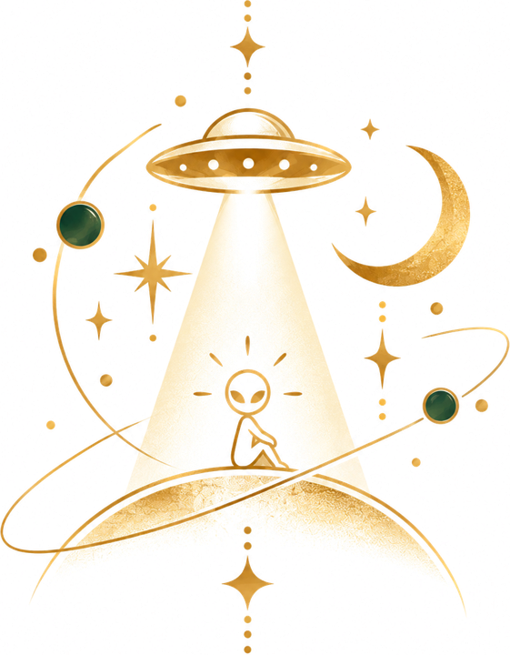
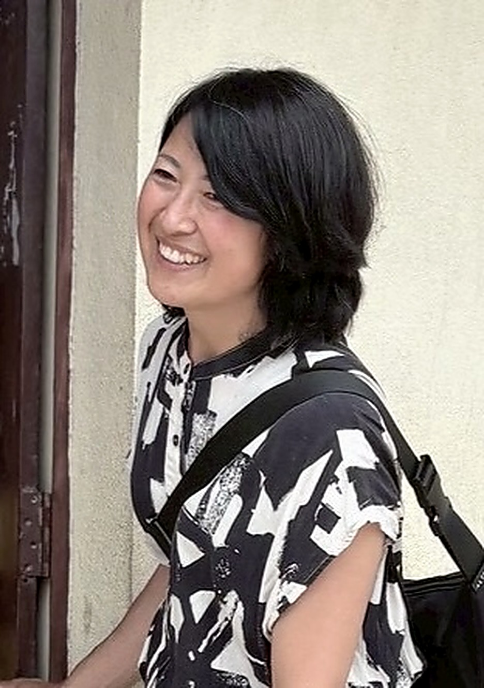

募集中
まじで遊部2027年、わたしで面白く生きていく！
内観・自分探し×行動の3ヶ月コース。2027年にやりたいことを出して、そこから年末のゴールへ。個人セッションを軸に、朝活・夜活・学びの会で走ります。
まるごと遊ぶコース 通常163,000円 → 99,000円／じっくり遊ぶコース 通常148,000円 → 77,000円（税込）
※特別価格は、個人セッション体験から3日以内のお申し込みが対象です
所見：
この星は、どうやら
“お遊戯会”らしい。

面白プロデューサー。好奇心と探求心、ちょっと宇宙人的な視点で、あなたの“面白い”を見つけます。

fig.02 — 観測者 SHIHO「ひとりひとりに使命があって、生きている意味がある」
そう知ったのが、自分探しを始めたきっかけでした。
自信がなくて、自分の才能や能力、使命を知りたくて。
診断テスト、講座、心理ブロック外し、YouTube、内観ジャーナリング……
とにかく探求しまくりました。
でも、計画は練れても行動に進めない日々が続いていました。
転機は、環境でした。
できない自分を受け入れてくれる人。
わたしがやりたくてもできなかったことを、楽しそうにやっている人。
頑張っている人。
そんな人たちのそばに身を置いたことで、少しずつ動けるようになりました。
だから今度は、
わたしがその環境をつくる側に。
人生を一つのお遊戯会だと思ったら、主役はあなた。
役は自分で選んでいい。
あなたらしい演目を一緒に見つけて、舞台に立つところまで伴走します。
「なんでそれが好きなの？」を面白がる。あなたが当たり前だと思っていることに、ワクワクの種があります。
自分探しを誰よりもやってきたからこそ、表面で終わらせない。内観と行動を行き来しながら深掘りします。
地球の常識から一歩離れて眺めると、短所に見えていたものが魅力に変わる。そんな見方を一緒に。
内観・自分探し×行動の3ヶ月コース。2027年にやりたいことを出して、そこから年末のゴールへ。個人セッションを軸に、朝活・夜活・学びの会で走ります。
まるごと遊ぶコース 通常163,000円 → 99,000円／じっくり遊ぶコース 通常148,000円 → 77,000円（税込）
※特別価格は、個人セッション体験から3日以内のお申し込みが対象です
第一弾はセブ島・パラワン島。初めてのひとり海外で、現地の暮らしを自分の目で見て、何に心が動くのかを確かめに行きます。支援者さんも一緒に旅に参加できる企画です。
LINEオープンチャットで、朝活ジャーナリング・夜活・プチセミナーをお試しできます。まずは気軽にのぞいてみてください。
罪悪感と、誰かに頼りきりだった毎日から、ひとり行動へ。わたしの変化をnoteで綴っています。
所見：
この星は、
どうやら
“お遊戯会”
らしい。
面白プロデューサー。好奇心と探求心、ちょっと宇宙人的な視点で、あなたの“面白い”を見つけます。
「ひとりひとりに使命があって、生きている意味がある」。そう知ったのが、自分探しを始めたきっかけでした。
自信がなくて、自分の才能や能力、使命を知りたくて。診断テスト、講座、心理ブロック外し、YouTube、内観ジャーナリング……とにかく探求しまくりました。でも、計画は練れても行動に進めない日々が続いていました。
転機は、環境でした。できない自分を受け入れてくれる人。わたしがやりたくてもできなかったことを、楽しそうにやっている人。頑張っている人。そんな人たちのそばに身を置いたことで、少しずつ動けるようになりました。
だから今度は、わたしがその環境をつくる側に。
人生を一つのお遊戯会だと思ったら、主役はあなた。役は自分で選んでいい。あなたらしい演目を一緒に見つけて、舞台に立つところまで伴走します。
「なんでそれが好きなの？」を面白がる。あなたが当たり前だと思っていることに、ワクワクの種があります。
自分探しを誰よりもやってきたからこそ、表面で終わらせない。内観と行動を行き来しながら深掘りします。
地球の常識から一歩離れて眺めると、短所に見えていたものが魅力に変わる。そんな見方を一緒に。
内観・自分探し×行動の3ヶ月コース（10月〜12月）。個人セッションを軸に、朝活・夜活・学びの会で走ります。
まるごと遊ぶコース 通常163,000円 → 99,000円
じっくり遊ぶコース 通常148,000円 → 77,000円（税込）
※特別価格は個人セッション体験から3日以内のお申し込みが対象
第一弾はセブ島・パラワン島。初めてのひとり海外で、何に心が動くのかを確かめに行きます。支援者さんも一緒に旅に参加できる企画です。
公式LINEで先にお知らせを受け取る朝活ジャーナリング・夜活・プチセミナーをお試しできます。まずは気軽にのぞいてみてください。
参加する →罪悪感と、誰かに頼りきりだった毎日から、ひとり行動へ。わたしの変化を綴っています。
読んでみる →